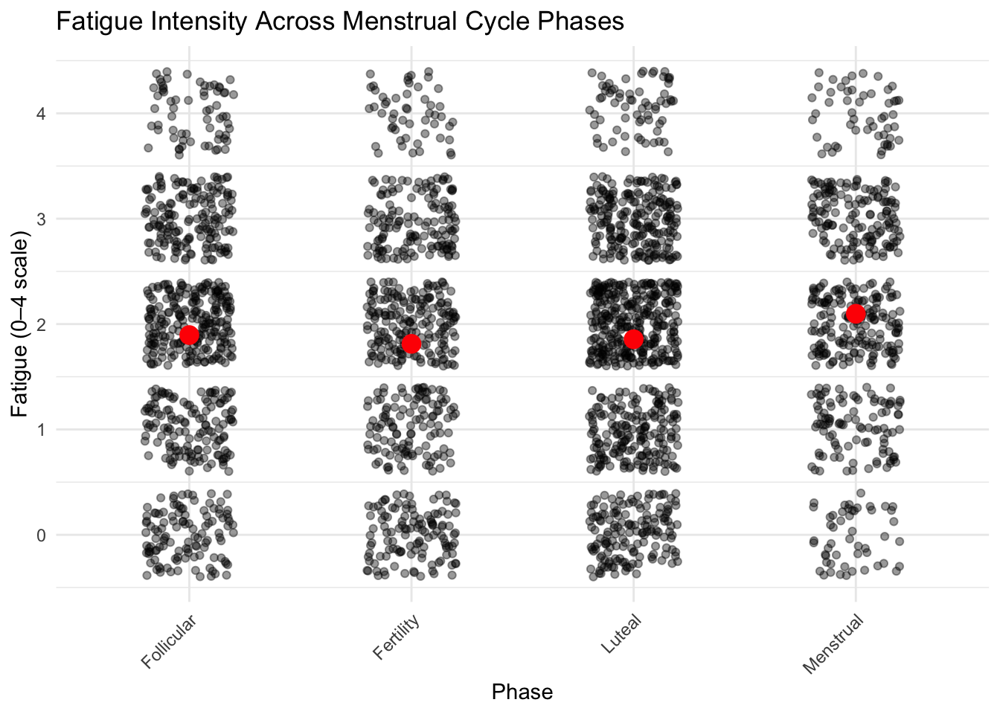
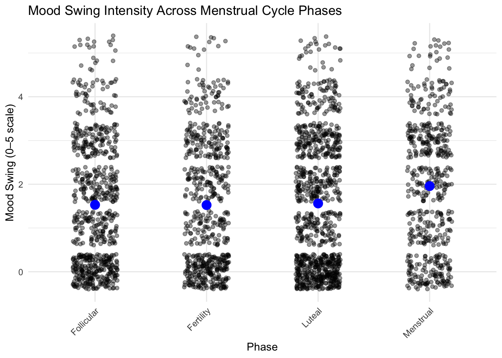
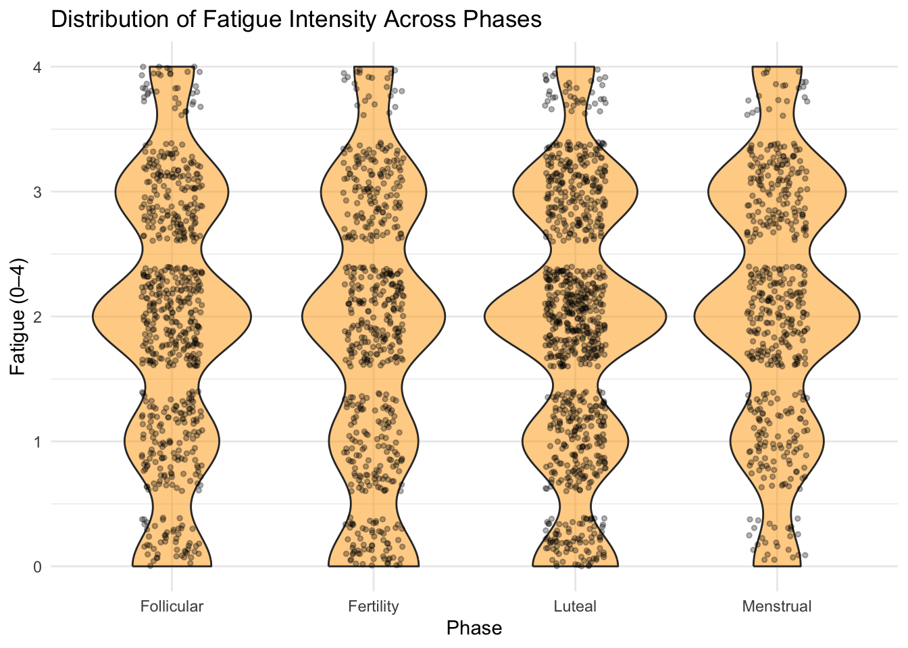
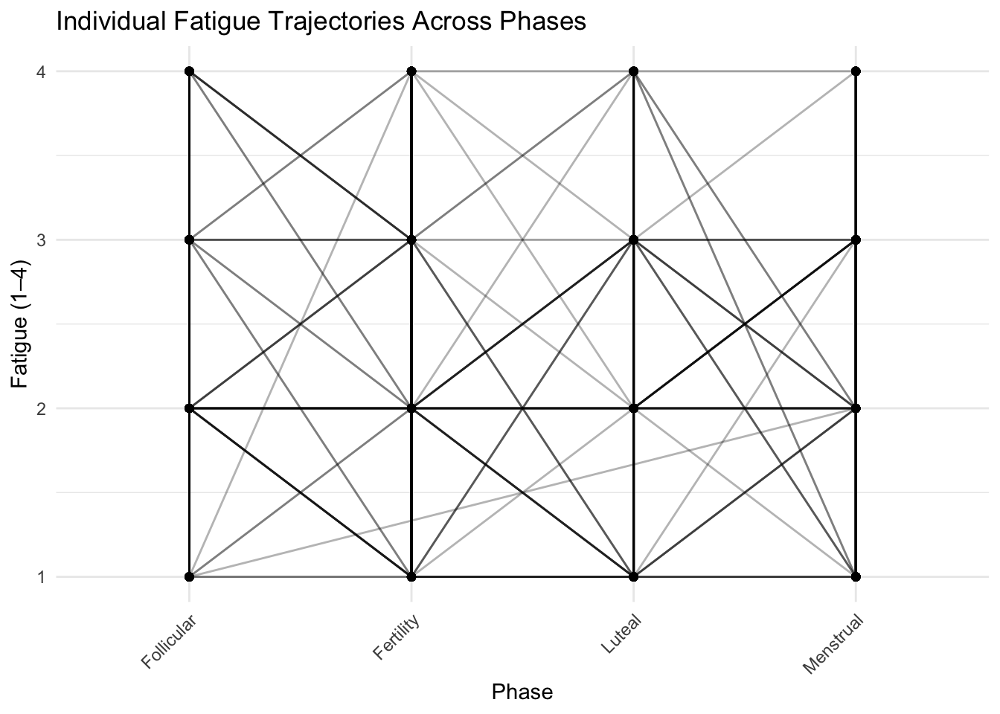

##yue’s interest: phase, lh, estrogen, moodswing, fatigue
first, explore relationship between LH and estrogen
#estrogen surge at fertility(actually it should be called ovulation) #lh also peak at ovulation
fatigue and moodswing
##this two bar graph show the proportion of fatigue and moodswing among four phases, but they are hard to read.
#so i aim to change the catogorical value (low, moderate, high) to 1,2,3, and so on. i want to sum and avrage. to show a typical cahnge of fatigue and mood in four phases.
# Convert moodswing and fatigue to numeric intensity scores
my_int_numeric <- my_int_clean %>%
mutate(
moodswing_num = case_when(
moodswing == "Very Low/Little" ~ 1,
moodswing == "Low" ~ 2,
moodswing == "Moderate" ~ 3,
moodswing == "High" ~ 4,
moodswing == "Very High" ~ 5,
TRUE ~ NA_real_
),
fatigue_num = case_when(
fatigue == "Low" ~ 1,
fatigue == "Moderate" ~ 2,
fatigue == "High" ~ 3,
fatigue == "Very High" ~ 4,
TRUE ~ NA_real_
)
)
# Calculate average intensity by phase
symptom_means <- my_int_numeric %>%
group_by(phase = factor(phase, levels = phase_order)) %>%
summarise(
avg_moodswing = mean(moodswing_num, na.rm = TRUE),
avg_fatigue = mean(fatigue_num, na.rm = TRUE),
n = n(),
.groups = 'drop'
)
symptom_means## # A tibble: 4 × 4
## phase avg_moodswing avg_fatigue n
## <fct> <dbl> <dbl> <int>
## 1 Menstrual 2.57 2.32 482
## 2 Follicular 2.40 2.26 603
## 3 Fertility 2.42 2.25 507
## 4 Luteal 2.54 2.21 811# Mood swing single line plot
ggplot(symptom_means, aes(x = phase, y = avg_moodswing, group = 1)) +
geom_line(color = "purple", size = 1.5, alpha = 0.7) +
geom_point(color = "purple", size = 3) +
geom_text(aes(label = round(avg_moodswing, 2)), vjust = -1, size = 4, fontface = "bold") +
labs(
title = "Average Mood Swing Intensity Across Menstrual Cycle Phases",
subtitle = "Higher values indicate more severe mood swings (Scale: 1-4)",
x = "Menstrual Cycle Phase",
y = "Average Mood Swing Intensity"
) +
ylim(1, 4) +
theme_minimal() +
theme(
axis.text.x = element_text(angle = 45, hjust = 1, size = 11),
plot.title = element_text(face = "bold"),
panel.grid.major = element_line(color = "grey90")
)
# Fatigue single line plot
ggplot(symptom_means, aes(x = phase, y = avg_fatigue, group = 1)) +
geom_line(color = "darkorange", size = 1.5, alpha = 0.7) +
geom_point(color = "darkorange", size = 3) +
geom_text(aes(label = round(avg_fatigue, 2)), vjust = -1, size = 4, fontface = "bold") +
labs(
title = "Average Fatigue Intensity Across Menstrual Cycle Phases",
subtitle = "Higher values indicate more severe fatigue (Scale: 1-4)",
x = "Menstrual Cycle Phase",
y = "Average Fatigue Intensity"
) +
ylim(1, 4) +
theme_minimal() +
theme(
axis.text.x = element_text(angle = 45, hjust = 1, size = 11),
plot.title = element_text(face = "bold"),
panel.grid.major = element_line(color = "grey90")
)
kruskal.test(moodswing_num ~ phase, data = my_int_numeric)##
## Kruskal-Wallis rank sum test
##
## data: moodswing_num by phase
## Kruskal-Wallis chi-squared = 7.4651, df = 3, p-value = 0.05846kruskal.test(fatigue_num ~ phase, data = my_int_numeric)##
## Kruskal-Wallis rank sum test
##
## data: fatigue_num by phase
## Kruskal-Wallis chi-squared = 4.3521, df = 3, p-value = 0.2259#cannot reject H0, There is no strong statistical evidence that average instensity of moodswing or fatigue vary across menstrual phases in this dataset.
#swich approach: longtidual changes
#moodswing
ggplot(my_int_numeric, aes(x = phase, y = moodswing_num, group = id)) +
geom_line(alpha = 0.3) +
geom_point(alpha = 0.5) +
labs(
title = "Individual Mood Swing Trajectories Across Phases",
x = "Phase",
y = "Mood Swing (1–5)"
) +
theme_minimal() +
theme(axis.text.x = element_text(angle = 45, hjust = 1))## Warning: Removed 171 rows containing missing values or values outside the scale range
## (`geom_line()`).## Warning: Removed 607 rows containing missing values or values outside the scale range
## (`geom_point()`).
ggplot(my_int_numeric, aes(x = phase, y = fatigue_num, group = id)) +
geom_line(alpha = 0.3) +
geom_point(alpha = 0.5) +
labs(
title = "Individual Fatigue Trajectories Across Phases",
x = "Phase",
y = "Fatigue (1–4)"
) +
theme_minimal() +
theme(axis.text.x = element_text(angle = 45, hjust = 1))
library(lme4)## Loading required package: Matrix##
## Attaching package: 'Matrix'## The following objects are masked from 'package:tidyr':
##
## expand, pack, unpack# Moodswing model
m1 <- lmer(moodswing_num ~ phase + (1 | id), data = my_int_numeric)
summary(m1)## Linear mixed model fit by REML ['lmerMod']
## Formula: moodswing_num ~ phase + (1 | id)
## Data: my_int_numeric
##
## REML criterion at convergence: 5001.4
##
## Scaled residuals:
## Min 1Q Median 3Q Max
## -2.5366 -0.7833 -0.0210 0.6304 3.3984
##
## Random effects:
## Groups Name Variance Std.Dev.
## id (Intercept) 0.4444 0.6667
## Residual 0.8841 0.9403
## Number of obs: 1796, groups: id, 41
##
## Fixed effects:
## Estimate Std. Error t value
## (Intercept) 2.2030718 0.1170140 18.827
## phaseFertility 0.0006892 0.0671048 0.010
## phaseLuteal 0.1435950 0.0620028 2.316
## phaseMenstrual 0.2098644 0.0677096 3.099
##
## Correlation of Fixed Effects:
## (Intr) phsFrt phsLtl
## phaseFrtlty -0.267
## phaseLuteal -0.301 0.521
## phaseMnstrl -0.281 0.471 0.529# Fatigue model
m2 <- lmer(fatigue_num ~ phase + (1 | id), data = my_int_numeric)
summary(m2)## Linear mixed model fit by REML ['lmerMod']
## Formula: fatigue_num ~ phase + (1 | id)
## Data: my_int_numeric
##
## REML criterion at convergence: 5792.9
##
## Scaled residuals:
## Min 1Q Median 3Q Max
## -3.2593 -0.7365 -0.0118 0.6407 3.2156
##
## Random effects:
## Groups Name Variance Std.Dev.
## id (Intercept) 0.2544 0.5043
## Residual 0.6151 0.7843
## Number of obs: 2403, groups: id, 42
##
## Fixed effects:
## Estimate Std. Error t value
## (Intercept) 2.18666 0.08520 25.665
## phaseFertility 0.01517 0.04794 0.316
## phaseLuteal -0.01330 0.04347 -0.306
## phaseMenstrual 0.09823 0.04951 1.984
##
## Correlation of Fixed Effects:
## (Intr) phsFrt phsLtl
## phaseFrtlty -0.257
## phaseLuteal -0.292 0.519
## phaseMnstrl -0.264 0.455 0.509#Individuals differ substantially in their baseline moodswing levels. #Again, individuals differ in fatigue baseline, but not as widely as moodswing.
###After adjusting for each individual’s baseline, moodswing intensity significantly increases in the Luteal and Menstrual phases compared with the Follicular phase. Fatigue slightly increases during the Menstrual phase, but the effect is small and borderline significant.
##Linear mixed-effects models were used to evaluate within-person changes in moodswing and fatigue across menstrual phases. The models included a random intercept for each participant to account for individual baseline differences. For moodswing, both the Luteal phase (β = 0.144) and the Menstrual phase (β = 0.210) showed significant increases compared with the Follicular phase, indicating that moodswing intensity tends to rise at these points in the cycle. Fertility showed no difference. For fatigue, only the Menstrual phase showed a borderline increase (β = 0.098), while Fertility and Luteal phases did not differ from Follicular. These findings suggest that while group-level averages obscure differences, within individuals, moodswing increases meaningfully in the late luteal and menstrual stages, and fatigue rises slightly during menstruation.
##some updates (Li’s advice) 1 scatter plot btw hormone and symtoms. (it’s super ugly, no typical trend. everyone has their baseline, #subjective self-report)
sum(hormone$flow_volume == "Not at all", na.rm = TRUE)## [1] 2462sum(hormone$flow_color == "Not at all", na.rm = TRUE)## [1] 2378hormone|>
summarize(
na_flow_volume = sum(is.na(flow_volume)),
na_flow_color = sum(is.na(flow_color))
)## # A tibble: 1 × 2
## na_flow_volume na_flow_color
## <int> <int>
## 1 2470 2465nrow(hormone)## [1] 5659stress and sleepissue